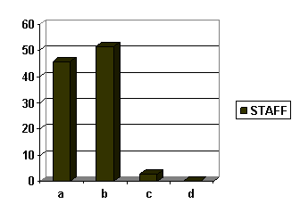
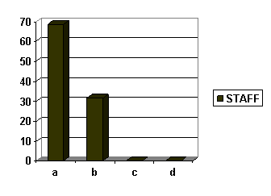
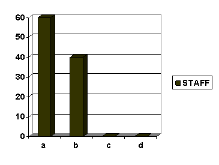
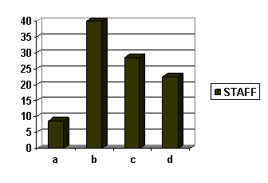
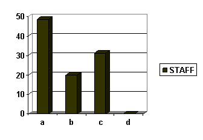
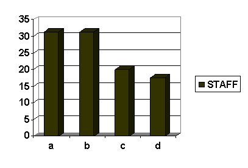

PERFORMANCE APPRAISAL
A CASE STUDY OF CPP LALKUAN
Abstract
The management of human resources is a very complicated task for those who are entrusted with successful running of an organization and this implies considerable knowledge of various aspects of “Personnel Management” in which the performance appraisal takes a very important role. This study focuses on evaluating the performance appraisal techniques followed in CPP Lalkuan and identifying the response of the employees toward those practices.
Authors:
Mr. Udit Pandey, Member IJTEMT
Assistant Professor
Department of Management Studies, Kumaun University
Campus Bhimtal, Uttarakhand, India
Ms. Anupa Chaudhary, Member IJTEMT, IEDRC
Assistant Professor
Seemant Institute of Technology
Pithoragarh, Uttarakhand, India
Paper Transcript of Paper Titled :
PERFORMANCE APPRAISAL:
A CASE STUDY OF CPP LALKUAN
Performance Appraisal
A Case Study Of CPP Lalkuan
Mr. Udit Pandey, Member IJTEMT
Assistant Professor
Department of Management Studies, Kumaun University
Campus Bhimtal, Uttarakhand, India
Ms. Anupa Chaudhary, Member IJTEMT, IEDRC
Assistant Professor
Seemant Institute of Technology
Pithoragarh, Uttarakhand, India
Abstract—The management of human resources is a very complicated task for those who are entrusted with successful running of an organization and this implies considerable knowledge of various aspects of “Personnel Management” in which the performance appraisal takes a very important role. This study focuses on evaluating the performance appraisal techniques followed in CPP Lalkuan and identifying the response of the employees toward those practices.
Keywords-performance appraisal, effective performance, goal settting, employees commitment, employees performance, employees satisfaction.
Introduction
Century pulp & paper a unit of century textiles & industries ltd. & a member of B.K.BIRLAGroup of companies is blessed with the able & astute guidance of its chairman BASANT KUMAR JI BIRLA.The Company is a pioneer in bringing industralisation in lalkuan, Small Township of distt. Nainital in Uttarakhand on barielly nainital road, 29 Deg. 5’minute. N latitude& 79 Deg. 30’ minute E longitudes, Elevation of 257m above mean sea level. The company has a human resource base of around 2282 people .
Century pulp & paper was established in 1984 with an installed capacity of 20,000 TPA of writing printing paper & 20,000 TPA of rayon grade pulp. After modernization & expansion, presently the production capacities have risen to 31300 TPA rayon grade pulp, 37250 TPA paper (wood based plant) & 84600 TPA paper (bagasse based plant). The bagasse based paper plant of CPP is unique in the country. It is equipped with latest technology to produce bagasse paper of competitive quality in national as well as international market. The company is pioneer in bagasse based paper manufacturing throughout the country.
CPP is one organization where paper from two different raw materials & rayon grade pulp are manufactured under one roof. The company makes wide variety of writing printing paper & high quality dissolving grade pulp.
In order to gauge the performance of employees in terms of their quality and quantity of work, performance assessment is carried out at regular intervals for further improvement, development and advancement of performance so as to achieve organization's objectives as well as overall development of employees. To reward an employee for the certain level of target achieved performance appraisal is used. The measurement of performance in the Century Pulp and Paper is carried out with the help of different tools for different levels of employees described below :
a) Performance Planning Review and Development(PPRD)-Quarterly
b) Annual Individual Merit Ratting
c) Performance Appraisal-Annual
d) Self Assessment-Annual
In Century Pulp and Paper the application of performance technique is for the staff and other higher level employees. The reason for limiting the application is the high staff and workman in the organization to the extent of 2282. The performance measurement for the superintendent and above is done through PPRD .
According to Roland Benjamin a “performance appraisal determines who shell receive merit increases” counsels employees on their improvement, determines training needs, determines promotion ability, identifies those who should be transferred. Moreover it improves employees job performance, encourages employees to express their views or to seek clarification on job duties, broadens there outlook, capacity and potential, promotes a more effective utilization of man power and improves placement, facilitates selection, reward and promotion of the best qualified employee, prevents grievances and increases the analytical abilities of supervisors.
It effect promotions based on competence & performance.
Access the training & development need of employees.
To decide upon a pay raise.
To let the employees know where they stand in so as their performance in concerned and to assist them with constructive criticism and guidance for the purpose of their development.
To improve communication.
To evaluate whether H.R. programs such as selection, training, transfers are being effective or not.
To discriminate between efficient and inefficient workers.
To assign the individual work for which they are best suited.
To prevent employee grievances.
Barriers to Effective Appraisal
Appraisal of personnel, both performance and potential, is used by every organization either formally or informally. However, this is full of shortcomings and limitations. There are certain barriers, which work against the effective appraisal systems. Some of these barriers are more pronounced in specific methods of appraisal, in some methods. Identification of these barriers is essential so that suitable measures any be adopted to reduce their impact to a possible minimum level. The barriers to effective appraisal may be grouped in three categories:
1. Faulty assumptions
2. Psychological blocks, and
3. Technical pitfalls.
1. FAULTY ASSUMPTIONS
Faulty assumptions of the parties concerned – superior and his subordinate – in appraisal system, leads to non proper working or objectively. These faulty assumptions work against an appraisal system as:
1) The assumption about fair and accurate appraisal among the managers for subordinates is untenable. Both superiors and subordinates show tendencies to avoid formal appraisal processes, as well as to head them in their respective work roles.
2) The managers also have a faulty assumption that what they have prepared once will last longer and will not require any changes in future. It should be recognized that no system can provide perfect, absolutely defensible, appraisal devoid of subjectivity.
2. PSYCHOLOGICAL BLOCKS
There psychological blocks that works against an effective appraisal system are: managers feeling of insecurity, appraisal as an extra burden, their being excessively modes or skeptical, their feeling to treat their subordinate’s failure as their deficiency.
3. TECHNICAL PITFALLS
Technical pitfall lies in two categories:
1) CRITERION PROBLEM
It is the standard of performance set by the senior for his subordinate and keeping it benchmark he compares his subordinates performance.
2) DISTORTIONS
Distortions are the error and biasedness in evaluating the performance. Evaluator may introduce such distortions consciously or unconsciously. Distortions are:
(A) HALO EFFECT
When rater is influenced by rate’s one or two outstandingly good (of bad) performances and he evaluates the entire performance based upon that.
(B) CENTRAL TENDENCY
When failing in discriminating best and the worst he marks average to all. The main reason for this is his lack of knowledge, taste, indifference, or carelessness.
(C) CONSTANT ERRORS
This error arises because of the nature of the observer. It might be possible that some observer always gives higher marks and some always give low. But there might be chances that some of the observer may give marks on potential performance rather than on recent one.
(D) OBSERVER’S LIKING AND DISLIKING
Superiors closeness or distance to some of his subordinates results into liking or disliking, which influences his observation and hence rating to them. There might be personal or emotional reasons for such biases.
Objectives of Performance Appraisal
Performance appraisal practices show that organizations undertake performance appraisal to meet certain objectives which are in the form of salary increase, promotion, identifying training and development needs, providing feedback to employees and putting pressure on employees for better performance.
1. SALARY INCREASE: Performance appraisal is a tool in planning salary hikes. Usually salary hikes are dependent on employee’s performances. Upon these performances there are continuous formal and informal evaluations conducted by superiors. In a small organization, since there is a direct contact between the employee and the one who make3s decisions about salary increase, performance appraisal can be an informal process. However, in a large organization where such contact hardly exists, formal performance appraisal has to be undertaken. This is an indicator of employee’s performance and based upon the performance deciding his compensation plan.
2. PROMOTION: Performance appraisal plays a significant role where promotion is based on merit. Most of the organizations often use a combination of merit and seniority for promotion. Performance appraisal disclosed how an employee is working in his present job and what his strong and weak points are. In the light of these, it can be decided whether he can be promoted to the next higher position and what additional training will be necessary for him. Similarly, performance appraisal can be used for transfer, demotion and discharge of an employee.
3. TRAINING AND DEVELOPMENT: Performance appraisal tries to identify the strengths and weaknesses of an employee on his present job. This information can be used for devising training and development programmes appropriate for overcoming weaknesses of the employees. In fact, many organizations use performance appraisal as means for identifying training needs of employees.
4. FEEDBACK:
Performance appraisal provides feedback to employees about their performance. It tells them where they stand. A person works better when he knows how he is working; how his efforts are contributing to the achievement of organizational objectives. This works in two ways. First, the person gets feedback about his performance and he may try to overcome his deficiencies, which will lead to better performance. Second, when the person gets feedback about this performance, he can relate his work to the organizational objectives.
This provides him satisfaction that his work is meaningful. Thus, given the proper organizational climate, he will try his bet to contribute maximum to the origination.
5. PRESSURE ON EMPLOYEES
Performance appraisal puts a sort of pressure on employees for better performance. If the employees are conscious that they are being appraised in respect of certain factors and their future largely depends on such appraisal, they tend to have positive and acceptable behaviour in this respect. Thus, appraisal can work automatically as control device.
Above roles of performance appraisal are quite important. However, these roles can be performed only when there is systematic performance appraisal, and various relevant decisions are made objectively in the light of result of performance appraisal. To be systematic and objective in performance appraisal, managers require an understanding of various intricacies involved in performance appraisal like methods of performance appraisal, problems in performance appraisal and have these problems can be overcomes.
Data Analysis, Finding and Conclusion
Along with secondary data available from the company’s documents, primary data is also collected using a closed ended questionnaire survey among 50 employees of the company using a convenience sampling. And the findings can be made on the basis of following results:
Does performance appraisal system reflects the real picture of an employee’s performance?
a) Always b) Often
c) Seldom d) Never
 The graph interprets that only 45.71 % of staff persons believe that the performance appraisal system reflect the real picture of performance always whereas 51.42 % staff person believe that it reflects of performance often. The few 2.87 % of staff persons think that it provide performance real picture seldom. The above graph depicts that the performance system needs to be more performance related with context to the employee.
Does performance system help to improve one’s knowledge and skills?
a) Yes b) To some extent
c) No d) Can’t say

Well it can be depicted from the graph that 68.57 % of staff persons are benefited n improving their knowledge and skills whereas 31.43 % of staff persons are get improved to some extent. Thus the performance appraisal system also helps the organization to reduce their training and development part as performance appraisal system fulfills the objective to some extent.
Are you satisfied with outcomes of the performance appraisal?
a) Yes b) To some extent
c) No d) Can’t say

The 60 % of staff is satisfied with outcome of the performance appraisal whereas 40 % are satisfy with it to some extent. Thus the performance appraisal system is able to satisfy the majority of the staff persons.
Is there any chance for appraiser to get biased for/against any employee?
a) Yes b) To some extent
c) No d) Can’t say
 Well it can be depicted from the graph that 40 % of staff says that there can be chance of biasedness by appraiser .28.57 % of the staff persons says there is no chance of biased ness whereas 22.86 % of staff persons says that they can’t say anything about it. The 8.57 % staff says there is a possibility if biasedness.
In the C.P.P. what type of performance appraisal system will be more effective?
a) Target Fixing b) Marking System
c) 360-Degree Appraisal d) None of these

The graph interprets that 48.58 % staff persons says that the target fixed method is more useful in C.P.P. as it is associated with production whereas 31.42 % staff says that 360 degree appraisal system can be more effective for the organization. 20 % of the staff persons thinks that marking system is suitable for it. This signifies that the target fixing being more supported whereas 360degree appraisal is also being suggested by staff persons.
Does the present appraisal system needs some improvement?
a) Yes b) To some extent
c) No d) Can’t say

Well it can be depicted from the graph that 31.42 % staff says that the system is required full or to some extent improvement in it, whereas 20 % staff says that it doesn’t require any improvement with 17.16 % staff does not have any idea . Thus the graph result depicts that the present system needs improvement with the mutual concern of employee needs and organizational objective.
Suggestions
A. The supervisor should not play dual and conflict role of both the judge and the helper.
B. The employee should be consulted regarding the selection procedure of performance appraisal.
C. There should be an efficient system of providing feedback of the employee on the basis of their performance appraisal.
D. Performance appraisal should be made to relate all their department activities like career, counseling, career planning, Promotion and T & D etc.
References
T. V. Rao and K. K. Verma, “Human Resource Development,” Rawat Publication, pp. 170–171, Reprint 1997.
Dessler, G. and Varkkey, B., ‘Human Resource Management’, Pearson 12th Edition.
http://www.educationobserver.com/forum/showthread.php?tid=12474
http://www.slidesandnotes.com/2011/02/objectives-of-performance-appraisal.html
http://sudhitasb.pbworks.com/f/HRM-+Performance+Appraisal.doc
Prasad, S., Chaudhary, A., & Prasad, S., Training System- A Perspective. IJIMT, Vol. 2, No. 1, February, 2011, ISSN: 2010-0248, pp.69-72.
Chaudhary, A., Prasad, S., Human Resource Financial Management, IJTEF, Vol. 1, No. 4, Dec, 2010, 2010-023X, pp. 342-344.
Chaudhary, A., Prasad, S., Training for Development of Professional Education, IJIMT, Vol. 2, No. 2, April, 2011, ISSN: 2010-0248, pp. 162-165.
Prasad, S., Chaudhary, A., & Prasad, S., Training System for Education Industry. IJTEF, Vol. 2, No. 3, June, 2011, ISSN: 2010-023X, pp.200-203.
Company documents and profile.
- AUTHORS PROFILE
- Authors Profile …